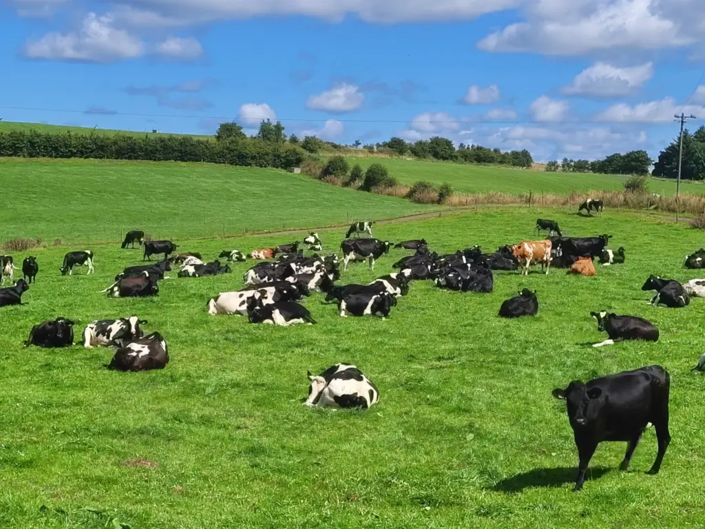
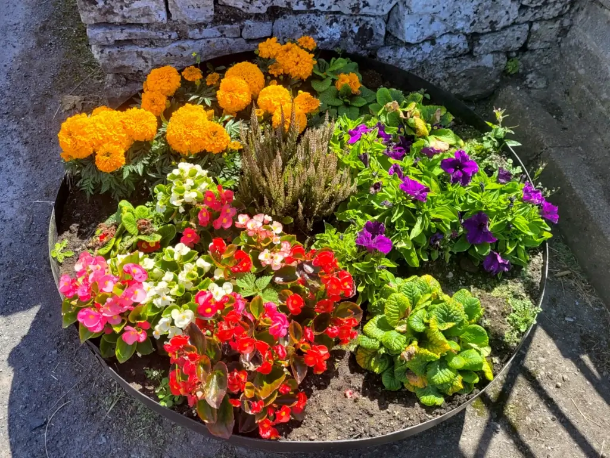
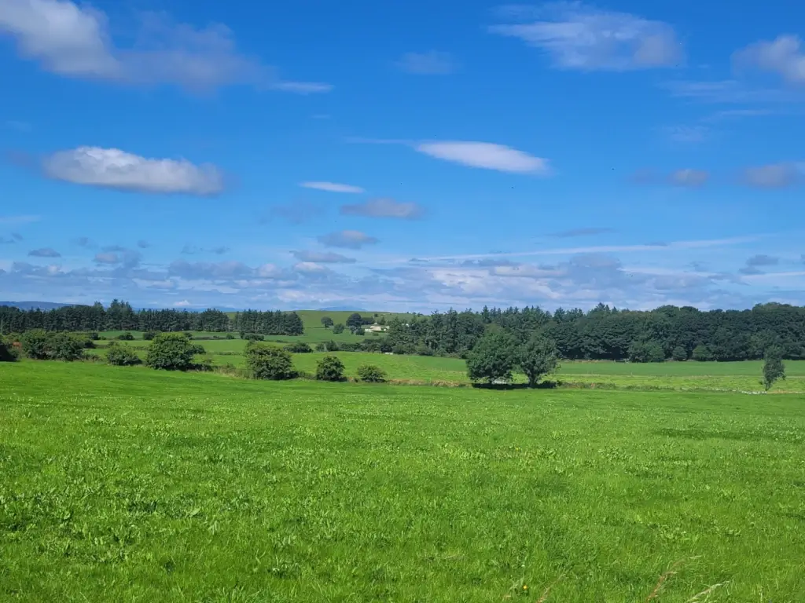

St. Joseph's ChurchAn Post on our main streetAghamore's quietest residents !A hedgerow for the wildlife to enjoyOld shop front muralStatue on main streetView of the mountains from the villageAghamore CemeteryBeautiful Aghamore fieldsView of our churchOne of our flower plantersThe main road in AghamoreTwo more flower plantersView from the CemeteryThe view from the villageVillage Inn pubEileens Bar on main streetOne example of a well kept pathOur cows doing what they do bestView of road from local school